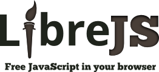

SEGURANÇA NA WEB
Atividade 1
Raul Alexandre
Introdução
O tema de Segurança na Web é extremamente amplo, podendo abranger
diversas áreas que se relacionam com a internet em geral, mas nem todos
estes aspectos serão tratados nesta página, e aqueles que o serão,
apresentarão pouca profundidade, por se tratar de uma pesquisa com
objetivo de apresentar uma visão ampla do tema.
Segurança na Web
A “Segurança na Web”
(usada como sinônimo de “Segurança na
Internet” em diversos locais), se trata de um ramo da
“Segurança de Computadores”, abrangendo a Internet,
Navegadores, Websites e redes, com objetivo de estabelecer
regras e medidas para se utilizar contra ataques pela Internet.
- Man-In-The-Middle (MITM)
- É um tipo de ataque onde a comunicação entre dois
participantes (como servidor e cliente) é
interceptada e talvez até modificada, com estes
acreditando que se trata de uma conexão direta.
-
Uma solução é um Secure Context (ou Contexto
Seguro, numa tradução livre), que pode ser uma
Window ou Worker para o qual certos padrões mínimos de
autenticação e confidencialidade devem ser atendidos, e
muitas APIs são acessíveis somente perante tal situação.
- Privacidade de Dados
-
Se tratando de privacidade, a conversa pode se
extender de forma desnecessária, então o ponto
principal a ser tratado aqui é a privacidade de dados
trocados entre o servidor e o cliente, por exemplo, que
originalmente se dava por uma conexão insegura (HTTP), mas com
a chegada do HTTPS, que utilizava o SSL (Secure Sockets Layer,
ou Camada de Soquetes Seguros, numa tradução livre), foi possibilitada
a troca de dados segura, e depois veio o TLS (Transport Layer Security,
ou Segurança da Camada de Transporte, numa tradução livre), que hoje é
utilizada em cima de diversos protocolos originalmente inseguros.
- Cross-Site Scripting (XSS)
-
É uma forma de exploit que permite que um hacker injete código malicioso do
lado do cliente num website, permitindo que os atacantes ultrapassem acessos de
controle e se passem por usuários, explorando a confiança do navegador para o
conteúdo recebido do servidor.
-
Uma solução é o CSP (Content Security Policy, ou Política de Segurança de
Conteúdo, numa tradução livre), uma camada de segurança adicional que permite
que administradores de servidores reduzam ou eliminem os fatores que poderiam
permitir a ocorrência de um ataque de Cross-Site Scripting, fazendo com que o
navegador compatível só execute scripts dos domínios marcados como confiáveis.
-

Uma outra solução, apresentada pelo projeto
GNU, é a extensão
LibreJS,
que bloqueia JavaScript não-trivial e não-livre, ou o
bloqueio completo de Scripts
nos navegadores.
- JavaScript Malicioso
-
Se afastando um pouco do XSS, um site com
JavaScript malicioso pode ser capaz de acessar
arquivos do dispositivo do usuário, e dois exemplos de
soluções são (além das soluções oferecidas acima), o
uso de um software em formato
Flatpak
no Linux, que diz oferecer
a capacidade de isolá-lo numa SandBox, e o uso da chamada de
sistema pledge(),
no OpenBSD, que permite restringir as operações
permitidas ao software.
Conclusão
A Segurança da Web é um campo muito amplo, englobando uma gama
diversa de questões de segurança que podem ser encontradas nos
outros ramos de Segurança de Computadores, e em constante
desenvolvimento por conta da importância e do uso da Internet,
numa corrida entre atacantes e defensores.
É necessário sempre analisar suas atitudes, pois por exemplo,
ao utilizar um software desatualizado, o usuário pode estar
deixando de lado diversas capacidades de segurança
desenvolvidas, ou a escolha entre conveniência e segurança.